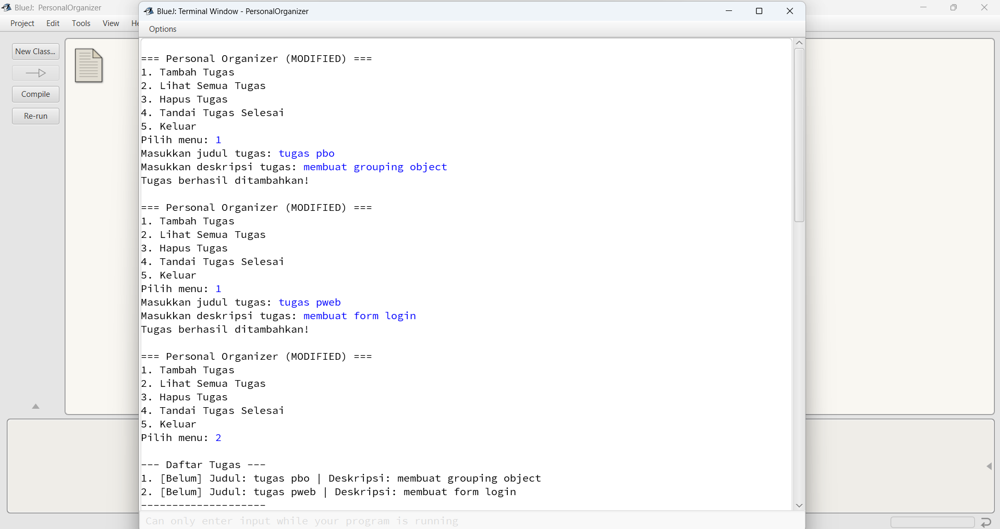
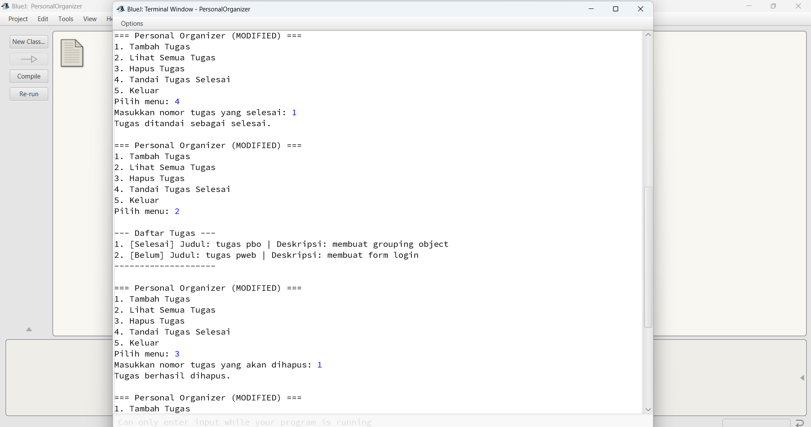
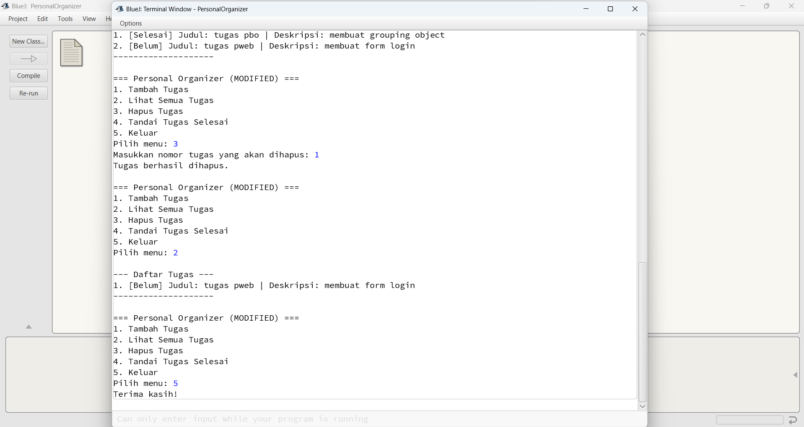
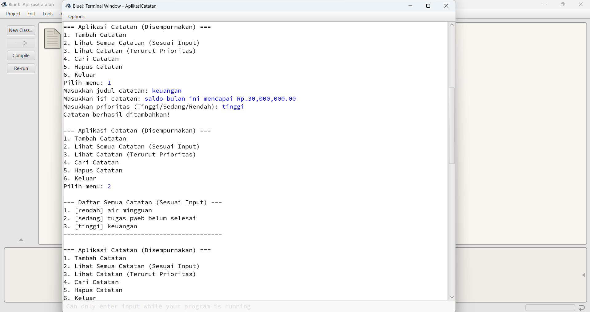
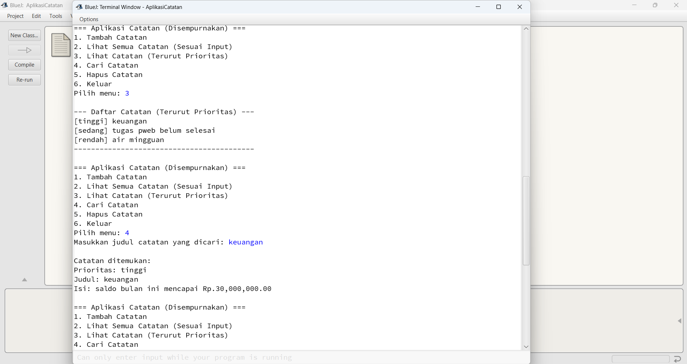
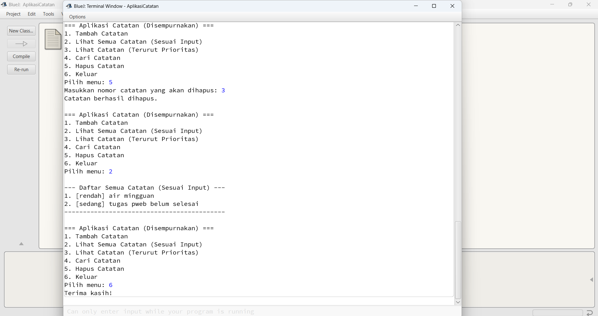

Aplikasi pertama adalah sebuah pengelola tugas pribadi. Program ini memungkinkan pengguna untuk menambah, melihat, menghapus, dan menandai tugas sebagai selesai melalui menu interaktif di terminal.
Tampilan menu dan interaksi dengan program Personal Organizer di terminal BlueJ.
Tampilan menu dan interaksi dengan program Personal Organizer di terminal BlueJ.
Tampilan menu dan interaksi dengan program Personal Organizer di terminal BlueJ.
Tampilan menu dan interaksi dengan program Personal Organizer di terminal BlueJ.
Berikut adalah kode lengkap untuk `PersonalOrganizer.java` yang telah dimodifikasi untuk menambahkan fungsionalitas status "selesai" pada setiap tugas.
import java.util.ArrayList;
import java.util.Scanner;
class Task {
private String title;
private String description;
private boolean isDone;
public Task(String title, String description) {
this.title = title;
this.description = description;
this.isDone = false;
}
public void markAsDone() {
this.isDone = true;
}
@Override
public String toString() {
String status = isDone ? "[Selesai] " : "[Belum] ";
return status + "Judul: " + title + " | Deskripsi: " + description;
}
}
public class PersonalOrganizer {
public static void main(String[] args) {
ArrayList tasks = new ArrayList<>();
Scanner scanner = new Scanner(System.in);
int choice;
do {
System.out.println("\n=== Personal Organizer (MODIFIED) ===");
System.out.println("1. Tambah Tugas");
System.out.println("2. Lihat Semua Tugas");
System.out.println("3. Hapus Tugas");
System.out.println("4. Tandai Tugas Selesai");
System.out.println("5. Keluar");
System.out.print("Pilih menu: ");
try {
choice = scanner.nextInt();
} catch (java.util.InputMismatchException e) {
System.out.println("Input tidak valid, harap masukkan angka.");
choice = 0;
}
scanner.nextLine();
switch (choice) {
case 1:
System.out.print("Masukkan judul tugas: ");
String title = scanner.nextLine();
System.out.print("Masukkan deskripsi tugas: ");
String description = scanner.nextLine();
tasks.add(new Task(title, description));
System.out.println("Tugas berhasil ditambahkan!");
break;
case 2:
System.out.println("\n--- Daftar Tugas ---");
if (tasks.isEmpty()) {
System.out.println("Belum ada tugas.");
} else {
for (int i = 0; i < tasks.size(); i++) {
System.out.println((i + 1) + ". " + tasks.get(i));
}
}
System.out.println("--------------------");
break;
case 3:
System.out.print("Masukkan nomor tugas yang akan dihapus: ");
int taskNumber = scanner.nextInt();
if (taskNumber > 0 && taskNumber <= tasks.size()) {
tasks.remove(taskNumber - 1);
System.out.println("Tugas berhasil dihapus.");
} else {
System.out.println("Nomor tugas tidak valid.");
}
break;
case 4:
System.out.print("Masukkan nomor tugas yang selesai: ");
int doneNumber = scanner.nextInt();
if (doneNumber > 0 && doneNumber <= tasks.size()) {
tasks.get(doneNumber - 1).markAsDone();
System.out.println("Tugas ditandai sebagai selesai.");
} else {
System.out.println("Nomor tugas tidak valid.");
}
break;
case 5:
System.out.println("Terima kasih!");
break;
default:
if (choice != 0) {
System.out.println("Pilihan tidak valid.");
}
}
} while (choice != 5);
scanner.close();
}
}
Aplikasi kedua adalah pengelola catatan sederhana. Program ini dimodifikasi untuk menambahkan fitur "prioritas" (Tinggi, Sedang, Rendah) pada setiap catatan dan menyediakan menu untuk menampilkan catatan terurut berdasarkan prioritas tersebut.
Tampilan menu baru dan hasil pengurutan catatan berdasarkan prioritas di terminal.
Tampilan menu baru dan hasil pengurutan catatan berdasarkan prioritas di terminal.
Tampilan menu baru dan hasil pengurutan catatan berdasarkan prioritas di terminal.
Tampilan menu baru dan hasil pengurutan catatan berdasarkan prioritas di terminal.
Berikut adalah kode lengkap untuk `AplikasiCatatan.java` yang telah disempurnakan dengan fitur prioritas dan pengurutan.
import java.util.ArrayList;
import java.util.Scanner;
import java.util.Collections;
import java.util.Comparator;
class Note {
private String title;
private String content;
private String priority;
public Note(String title, String content, String priority) {
this.title = title;
this.content = content;
this.priority = priority;
}
public String getTitle() { return title; }
public String getPriority() { return priority; }
@Override
public String toString() {
return "Prioritas: " + priority + "\nJudul: " + title + "\nIsi: " + content;
}
}
public class AplikasiCatatan {
public static void main(String[] args) {
ArrayList notes = new ArrayList<>();
Scanner scanner = new Scanner(System.in);
int choice;
do {
System.out.println("\n=== Aplikasi Catatan (Disempurnakan) ===");
System.out.println("1. Tambah Catatan");
System.out.println("2. Lihat Semua Catatan (Sesuai Input)");
System.out.println("3. Lihat Catatan (Terurut Prioritas)");
System.out.println("4. Cari Catatan");
System.out.println("5. Hapus Catatan");
System.out.println("6. Keluar");
System.out.print("Pilih menu: ");
try {
choice = scanner.nextInt();
} catch (java.util.InputMismatchException e) {
System.out.println("Input tidak valid, harap masukkan angka.");
choice = 0;
}
scanner.nextLine();
switch (choice) {
case 1:
System.out.print("Masukkan judul catatan: ");
String title = scanner.nextLine();
System.out.print("Masukkan isi catatan: ");
String content = scanner.nextLine();
System.out.print("Masukkan prioritas (Tinggi/Sedang/Rendah): ");
String priority = scanner.nextLine();
notes.add(new Note(title, content, priority));
System.out.println("Catatan berhasil ditambahkan!");
break;
case 2:
System.out.println("\n--- Daftar Semua Catatan (Sesuai Input) ---");
if (notes.isEmpty()) {
System.out.println("Belum ada catatan.");
} else {
for (int i = 0; i < notes.size(); i++) {
Note note = notes.get(i);
System.out.println((i + 1) + ". [" + note.getPriority() + "] " + note.getTitle());
}
}
System.out.println("-------------------------------------------");
break;
case 3:
System.out.println("\n--- Daftar Catatan (Terurut Prioritas) ---");
if (notes.isEmpty()) {
System.out.println("Belum ada catatan.");
} else {
ArrayList sortedNotes = new ArrayList<>(notes);
Collections.sort(sortedNotes, Comparator.comparing(note -> {
switch (note.getPriority().toLowerCase()) {
case "tinggi": return 0;
case "sedang": return 1;
case "rendah": return 2;
default: return 3;
}
}));
for(Note note : sortedNotes) {
System.out.println("[" + note.getPriority() + "] " + note.getTitle());
}
}
System.out.println("------------------------------------------");
break;
case 4:
System.out.print("Masukkan judul catatan yang dicari: ");
String searchTitle = scanner.nextLine().toLowerCase();
boolean found = false;
for (Note note : notes) {
if (note.getTitle().toLowerCase().contains(searchTitle)) {
System.out.println("\nCatatan ditemukan:\n" + note);
found = true;
}
}
if (!found) { System.out.println("Catatan tidak ditemukan."); }
break;
case 5:
System.out.print("Masukkan nomor catatan yang akan dihapus: ");
int noteNumber = scanner.nextInt();
if (noteNumber > 0 && noteNumber <= notes.size()) {
notes.remove(noteNumber - 1);
System.out.println("Catatan berhasil dihapus.");
} else {
System.out.println("Nomor catatan tidak valid.");
}
break;
case 6:
System.out.println("Terima kasih!");
break;
default:
if (choice != 0) {
System.out.println("Pilihan tidak valid.");
}
}
} while (choice != 6);
scanner.close();
}
}